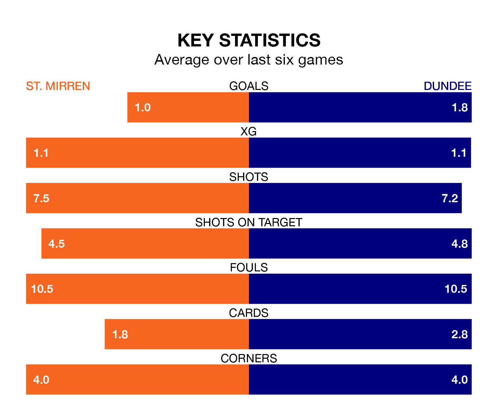

Dundee travel to St. Mirren on late Wednesday in Premiership.
The visitors come into the game on the back of a defeat in their last match, having lost to Hearts 3-2 at home, with goals from Jordan McGhee and Lyall Cameron.
The Buddies, meanwhile, won their last match, 3-0 against Hibernian, with their goals scored by Greg Kiltie, Mikael Mandron and Alexandros Gogic.
With 31 goals in 22 games so far this season, Dundee are scoring more than average in the league with 1.4 goals per game. But they are conceding more than average too, letting in 36 goals at a rate of 1.6 per game.
St. Mirren, meanwhile, are below average scorers, with 1.1 goals per game, compared to a league average of 1.3. They have conceded 1.2 goals per game.
In the last 10 years, St. Mirren and Dundee have played each other on 14 occasions. St. Mirren won seven of them, Dundee four, and they drew three times.
On average, the Buddies scored 1.4 goals and the Dees 1.2 in those matches.
Their last meeting was on November 11, when Dundee won 4-0 at home.
In Zachary Hemming, the Buddies can rely on one of the league's safest pair of hands. He has kept eight clean sheets in his 24 appearances this season in Premiership.
In the Dees's net, Trevor Carson has seven clean sheets in 20 games. He has conceded a goal every 62 minutes, 30% more often than the 83 minutes between goals for Hemming.
The home team are in disappointing form in Premiership, with two wins and four losses from their last six games.
With a win and two draws over that period, the visitors' form is slightly worse – they have taken five points from 18, compared to St. Mirren's six.
St. Mirren are fifth in the table after 24 games, of which they have won nine and drawn five, earning 32 points.
Dundee are one place behind the Buddies in sixth, with six wins and eight draws putting them on 26 points.
Wednesday's match will be refereed by Steven McLean, who has taken charge of seven Premiership games so far this season, issuing one red card and booking 26 players. He has awarded five penalties.
The last St. Mirren game McLean refereed was a 2-2 home draw with Hibernian on November 8. He is yet to oversee a match featuring Dundee this season.
Updated: 10:01 (UTC), 06/02/24